Stack
Technical paper
Scaling Reinforcement Learning in World Models for Generalist Embodied Agents
Method
Agent-driven environment construction
From recorded robot demonstrations to a pool of training environments.
Recorded frames Head-camera clips
Selected initial states
Write PE + rubric
Image editing Four variants per task
Env Pool

PEGrasp the long rim midpoint with the left gripper.
RubricThe grip holds the specified rim.
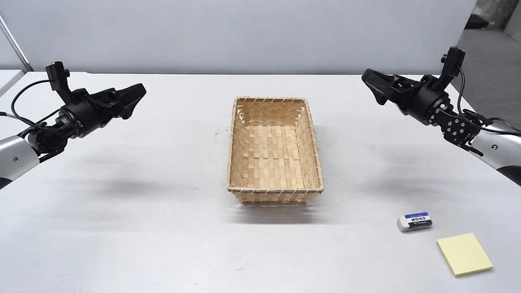


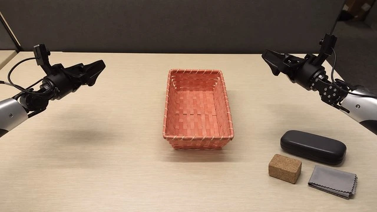
PEGrasp the exposed fabric edge with the left gripper.
RubricThe left gripper holds the fabric edge.

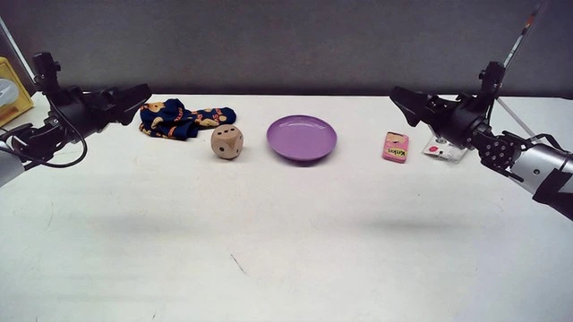

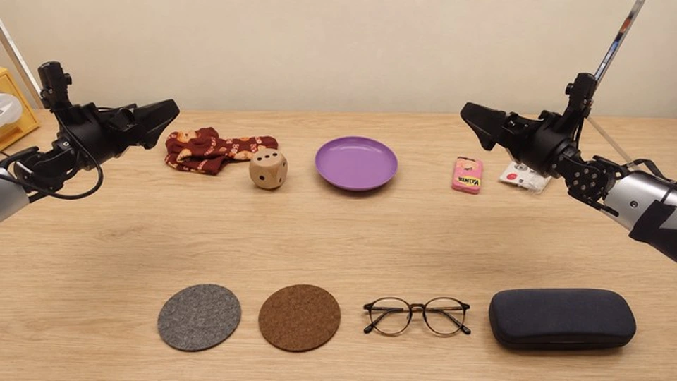
PEPress the red button between the purple and blue buttons.
RubricThe red button visibly moves down or changes state.
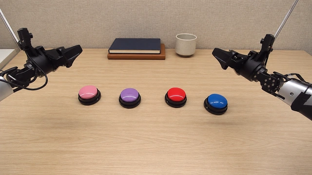
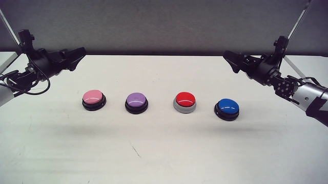
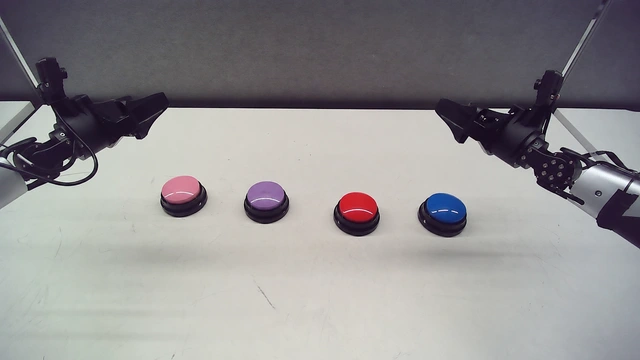
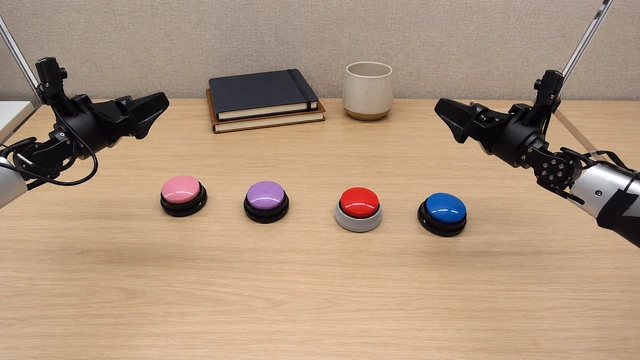
PEUse the right gripper to pour the beads from the cup into the white bowl.
RubricAll beads land in the bowl, with none left in the cup or spilled.
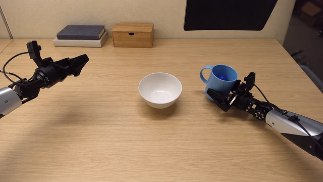
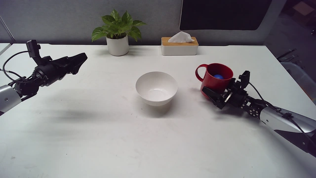
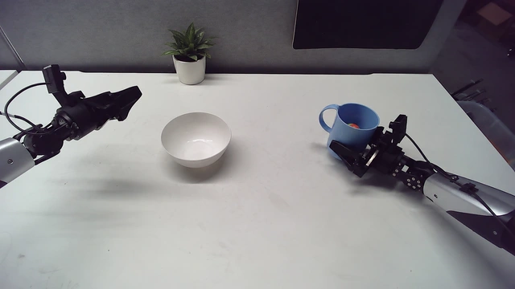
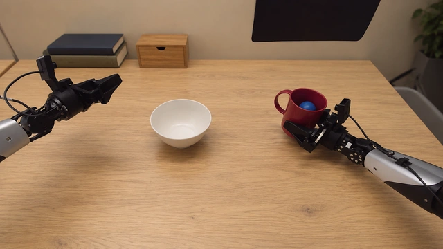
Approved
World model architecture and inference
Fine-tune Omni on three sources of manipulation data, then predict robot observations autoregressively.
Fine-tuning data
Egocentric human video

UMI demonstrations

Real-robot trajectories
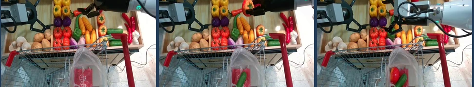
 Pretrained Omni
Supervised fine-tuning
Pretrained Omni
Supervised fine-tuning
Autoregressive inference
Blue towel fold · Real robotPolicyAction chunk a₀

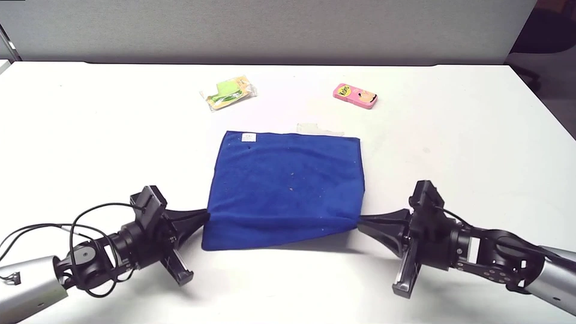


World model
Omni · Multimodal MoE
Return to policy and append to history
Interleaved history
- Initial observation o₀
- Action chunk a₀
- Next observation ô₁
- Action chunk a₁
- Next observation ô₂
- Action chunk a₂
- Next observation ô₃
Policy training with PPO
PPO trains on world-model rollouts with rubric rewards. The example clips come from the 242-task real-robot evaluation.
Sample from Env Pool
Task instructions and initial scenes
Parallel rollouts
Current policy ↔ frozen world model
Stack the green block
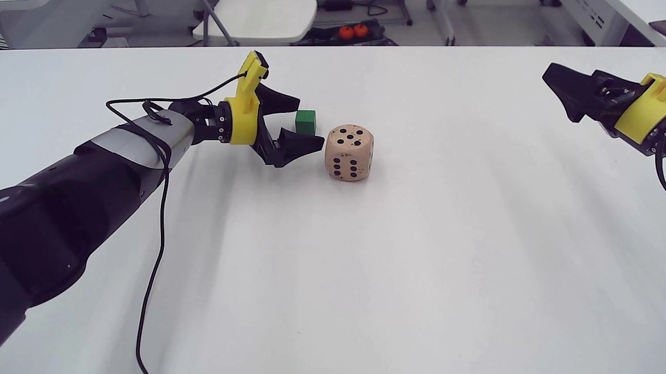
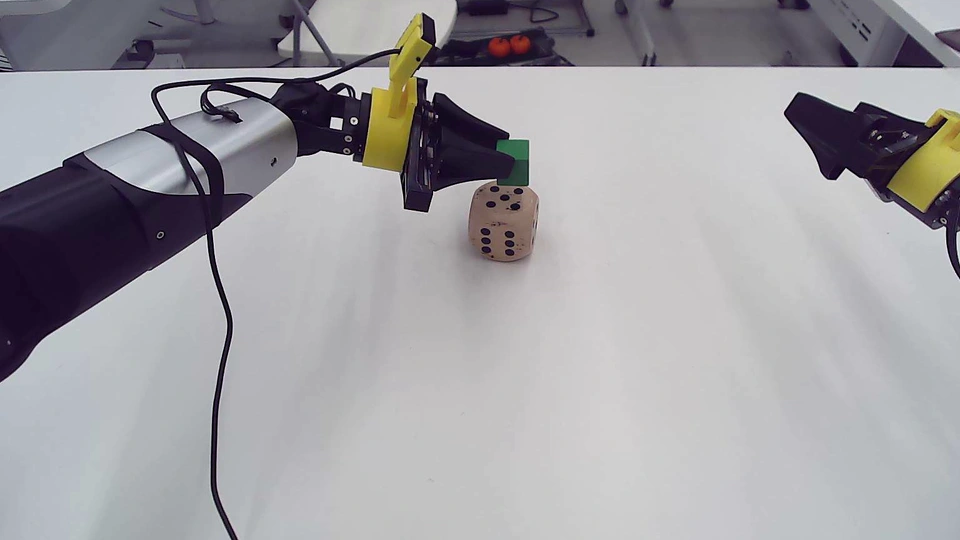
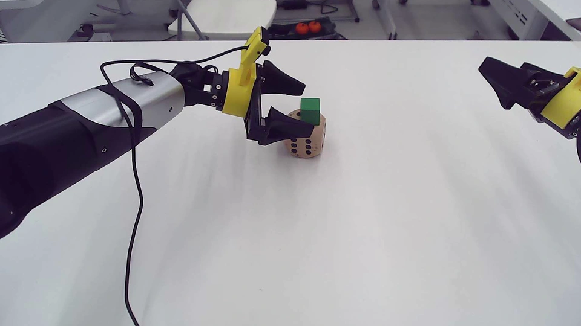
Drag the pencil case
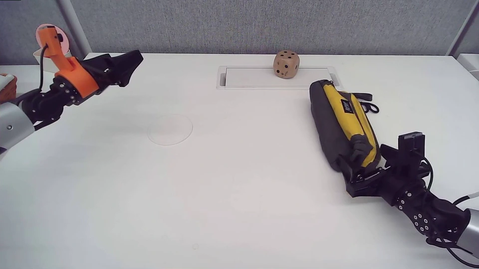

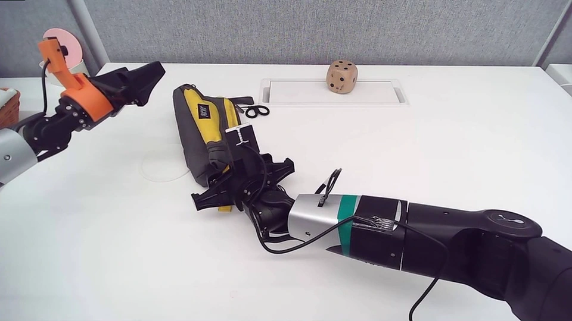
Rotate the fork
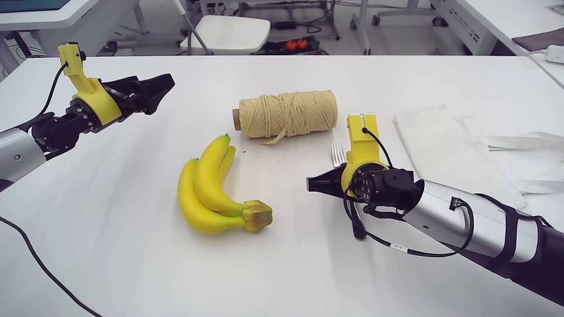
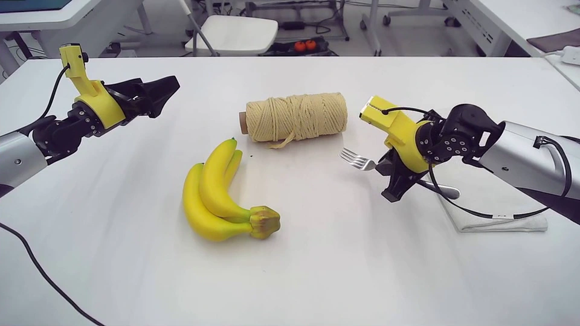
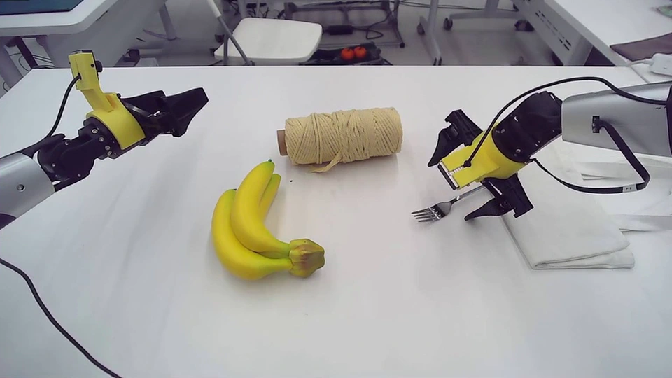
VLM rubric check
Yes → successNo → failure
Green block stacked on the die and released?
r1
Case dragged to the front left of the coaster?
r2
Fork parallel to the table edge, tines toward bananas?
r3
Update the policy
Executed action tokens
Rewards + value estimates
GAE advantages
Clipped PPO
πold→πnew
Updated policy for the next round
Scaling results
Real-robot success across training scales
1,210
Real-robot trials per policy
242 tasks across 17 skills · 5 trials per task
Success on unseen real-robot tasks

Training task count and rollout budget scale together. The 16-, 64-, and 256-task pools use 256, 1,024, and 4,096 rollouts per training round, respectively.
Real-robot execution time
| RL training tasks | Mean time |
|---|---|
| SFT | 12.78 s |
| 16 | 9.32 s |
| 64 | 8.44 s |
| 256 | 7.54 s |
Real-robot evaluation
Before and after world-model RL
12 matched tasks across 12 skills. Head-camera trials play at their recorded speed.
Place
Place the narrow-spout bottle
Pull
Drag the pencil case
Wipe
Wipe the wooden board
Grasp
Grasp the blue mug by its handle
Insert
Insert the spoon into the holder
Rotate
Rotate the fork
Straighten
Stand the blue cup upright
Press
Press the rim of the green plate
Push
Push the soap past the plate
Topple
Topple the amber cup
Visual prompt
Place using visual cues
Agentic experiment
Planning and execution on real robots
GPT-Astra chooses a manipulation, the RL-trained policy executes it, and the planner uses the returned observations to continue, retry or revise.
10 / 20
complete trials with GPT-Astra and the RL-trained policy. The same planner with the pre-RL policy completed 0 of 20.
- Cup exchange
- 2 / 5
- Tabletop organization
- 2 / 5
- Shirt folding
- 2 / 5
- Cooking
- 4 / 5
Citation
ByteDance Seed · November 2026
BibTeX
@techreport{zhang2026scaling,
title = {Scaling Reinforcement Learning in World Models for Generalist Embodied Agents},
author = {Zhilong Zhang and Yihao Sun and Longfei Li and Hao Luo and
Guanghao Li and Heyuan Yao and Yucheng Wang and Haiqin Cui and
Juncheng Mu and Chengyu Bai and Youliang Zhang and Chenxiao Zhang and
Junpeng Ma and Yang Yu and Ceyuan Yang and Qian Wang},
institution = {ByteDance Seed},
year = {2026},
month = nov
}